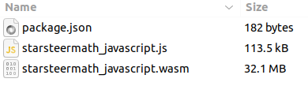
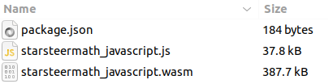

Тяжело в учении,
Павел Дадыкин
Обо мне
Павел Дадыкин
9 лет во фронтенде​
2 года тимлид на проекте StarLite Web
Первый раз на FrontendConf
О чём доклад
История внедрения WebAssembly на реальном проекте​
Подводные камни и решение проблем​
Стоит ли вам использовать WebAssembly в своих проектах?​
Разработка продуктов для нефтегазовой индустрии​​
Geoscience-решения​
Много математических расчётов
Desktop, Web, iOS, Android, SDK, Public API
Что за расчёты?
Эволюция продуктов ROGII
Расчёты написаны для Desktop App (на C++)​​
Хранение данных в Cloud​
Повторение расчётов в Web, iOS, Android
Проблемы
Дублирование расчётов на разных платформах​​
Низкая производительность при вычислениях​​
Сложности добавления/изменения расчётов
Цель
Внедрить в приложение расчёты, написанные на С++
Сохранить при этом текущий стек технологий:
React
Typescript Webpack Web workers​ Canvas
WebGL
WebAssembly (WASM)​
Формат байт-кода, исполняемого современными браузерами​
Может взаимодействовать с JavaScript
Плюсы WASM
Обеспечивает высокую скорость исполнения​​
Поддержка всеми браузерами​​
Компиляция в WASM доступна для множества языков C++ , C#, Rust, Elixir, Erlang, Go, TypeScript, D, Kotlin)​
Минусы WASM
Чёрный ящик​
Внешняя типизация​​
Конвертация данных JS → WASM → JS​
Доклады про WASM
Тяжело в учении​
Примеры использования WASM в сети (конец 2021 года):
A + B​
Factorial​​
Fibonacci​
Как же скомпилировать С++ в WASM?
Компиляция в WASM
Emscripten​
Компиляция из C/C++/LLVM-language в WebAssembly​
Запуск этого кода в Web/Node.js
Поддержка библиотек C/C++
Документация Emscripten​
Дефолтной конфигурации Emscripten
Флаги компиляции
-s DYNAMIC_EXECUTION=0 -s ENVIRONMENT=worker
-s MODULARIZE=1 -s ALLOW_MEMORY_GROWTH=1 --bind
Выключаем использование eval​
Задаем выполнение в веб-воркере ‚Äã‚Äã‚Äã–û–±–æ—Ä–∞—á–∏–≤–∞–µ–º в модульный код (без глобальных переменных)​
Разрешаем автоматический рост памяти​
Говорим привязать все функции к js
Где же взять описание функций?
Генерация документации​
Doxygen
Как сделать удобной отладку ошибок?
Разные сборки (через cmake)
Debug
Большой вес файла
Работает медленнее
Детальное описание ошибок

Release
Маленький вес файла
Работает быстро
Сложно отлаживать

Утечки памяти
Добавили дополнительный флаг в сборку
Он передаёт флаг -fsanitize=address –g2 компилятору​​
Вызов функции для принудительного сбора статистики​​
Как реализовать версионирование?
Версионирование
Emscripten на выходе даёт 2 файла:
Бинарный .wasm
Обвязка в виде .js-файла​​
Версионирование
Добавить в начало JS-файла комментарий
/*
Version: 1.3.0
Commit: 681def4aefb99c9de5357617dc138b66e6ae1d0b ​
Pipeline: 103990 ​
*/
Версионирование
Используем
Nexus
Собираем в npm-пакет​​
Учитываем вариант сборки (Debug/Release)
"dependencies": { ​
"@nexus-npm/wasm": "0.9.0-Release ", ​
}​
Подключение WASM к проекту
Как настроить Webpack?
Webpack 4 file-loader​
{
test: /\.wasm$/ ,
type: "javascript/auto",
use: [{​​
loader: "file-loader",​​ ​​
options: {​ name: "wasm/[name].[hash].[ext]" }​​
}]​​​​
}​
Загрузка WASM в приложение​
import wasm from 'math-js.wasm';
const response = await client.get(wasm , {
responseType: 'arraybuffer ' ​​
});
const wasmBinary = response.data;​​
Как добавить типизацию?
Typescript
@types/emscripten
для вспомогательных методов
​
Описание структур и функций вручную, используя Doxygen
​
Автоматическая генерация .ts из .hpp
CSP Error
Refused to compile or instantiate WebAssembly module because 'unsafe-eval' is not an allowed source of script in the following Content Security Policy directive: "script-src https:".
Content-Security-Policy: script-src 'wasm-unsafe-eval'
Как конвертировать данные JS ↔ WASM?
Типы данных
JS
Массивы объектов
Автоматическое выделение памяти
Автоматическая сборка мусора
C/C++
std::vector​ / TypedArray​ / Динамические массивы
Требуется выделение памяти
Нужно освобождать выделенную память
Конвертация JS ↔ WASM
const pointer = instance._malloc (size * Float64Array.BYTES_PER_ELEMENT);
instance.HEAPF64.set (
new Float64Array(size),
​pointer / Float64Array.BYTES_PER_ELEMENT,
);
instance._free (trajectory.mdArray.pointer); ​​
Добавление обёртки
Добавили метаданные для функций конвертации и высвобождения памяти​
Emscripten сам конвертирует типы в C-структуры​
Передаём сразу массив объектов​
Вызываем freeCollection(data), когда массив не нуже​н
convertToJSObject <WasmType, JSArrayType>(data)​convertFromJSObject <JSArrayType, WasmType>(data)
Undefined / NaN
В TypeScript  мы можем написать
type X = number | undefined ​
В C/C++  так нельзя!
NaN
Undefined → NaN
point.data ?? NaN
​
if (point.data && !isNaN (point.data))
Batch запросов
Большая часть времени тратится на преобразования из структур данных JS в WASM и обратно​
Лучше выполнить одну большую операцию, чем много маленьких​
Batch запросов
for (const element of elements) { const point = calculatePoint (element.x);
points.push(point);
}​
const xArray = elements.map((element) => element.x);
const points = wasm.calculatePoints (xArray);
Как всё подружить с веб-воркерами?
Web workers
Механизм, который позволяет скрипту выполняться в фоновом потоке
Основной поток без блокировки и замедления​​​
Worker'ы могут запускать другие worker'ы​​​
Они общаются друг с другом через postMessage​​​​
Web workers в StarLite​
Как тестировать WASM?
Тестирование
Unit-тесты на стороне С++
​Интеграционные тесты QAA​​​
Jest
import { readFileSync } from 'fs';
const wasmBinary = readFileSync (
'node_modules/path-to-wasm/math.wasm ',​
);
instance = await createModule({ wasmBinary });
Плюсы
Скорость расчётов выросла (в 2 – 10 раз)​
Расчёты на разных платформах совпадают​​​
Нет дублирования математических расчётов​
Минусы
Сложность отладки​
Зависимость от другой команды​​​
Долгая итерация внедрения​​
Когда стоит использовать WASM?
Нужные функции уже написаны на другом языке​
У вас большие объёмы данных, и вам нужен прирост в скорости​
У вас есть ресурсы на внедрение​​
Пожалуйста, оставьте свой отзыв
Павел Дадыкин
https://meloman4eg.github.io/wasm-fc-2024/
@meloman4eg